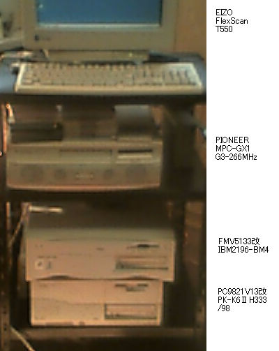
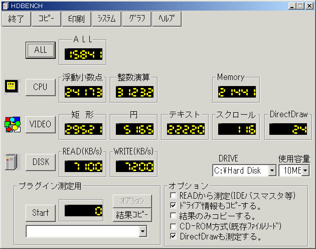

FMV5133の改造について
2002年2月9日記載
FMV5133の改造となると、CPUアクセラレータを取り付けて、K6-2の550MHzくらいまでクロックアップ
する、というのが常道だと思います。もちろん、そうしてクロックアップしたマシンも、１台は所有して
いたのですが、親戚に譲渡してしまいました。今回は、いくつかの理由で、もう１台のFMVを改造しました。
理由１. 下の写真のように、何台ものパソコンを、ラックに乗せて使うので、タワー型では困る。
したがって、できるだけ薄いデスクトップ型の筐体がいい。ただし、PCIバスの拡張カードは入ること。
あまり鉄板が厚くなく、加工しやすいのがいい。

理由２. IBM2196-BM4らしきマザーボードを、５００円で入手してしまった。電源は何と
４７０円だった。これを使わない手はない。マザーボードはK6-2の550MHzまで対応で、チップセットは
Sis540、Video、Audio、Ethenet内蔵のもの。
理由３. USBポートがほしい。古いFMVにはない。
理由４. 古いFMVが余っている。
改造は、FMVの筐体、FDドライブ、CDROMドライブ、電源スイッチを流用。マザーボードは小さいので、
スペースの余裕がありすぎるほど、ただしネジ穴の位置はあわないので、配置を決めて、動作確認をした
あとで、ドリルを使って加工する。電源もサイズ的には問題ないが、ネジがバックパネルに当たるので、
バックパネルをヤスリで削る。電源スイッチのコネクタも少し寸法が合わないので、ヤスリで削る。
CPUは、あり合わせのK6-2/333MHzを、100MHzの3.5倍で動作させる。HDはIBMのDTTA351010、
PCIグラフィックカードは、Mystiqを使用。
結果はほぼ満足できるもので、ベンチマーク（HDBench261）を下に添付します。

FMV5133の550MHzへのクロックアップについて
2002年2月26日記載
500MHzのK6-2を見つけたので、今までの333MHzと交換し、100MHzX5.5の550MHzで動作させてみた。
全く問題なく起動し、熱的にも異常がない。コア電圧は、定格で2.2Vだが、なぜかマザーボードが
すでに2.3Vに設定されていたので、そのまま使用している。ちなみに、550MHzのK6-2の定格コア電圧
は2.3V。使用感は、ほとんど変わらないが、これ以上早くはならないことになって、落ち着いたので、
しばらく、セカンドマシンとして使うことにする。
古いAT互換機関係のページに戻る